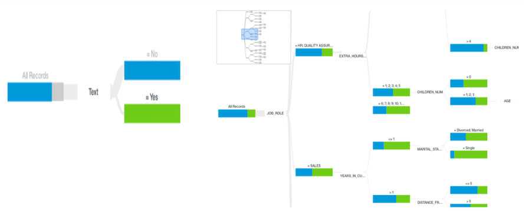
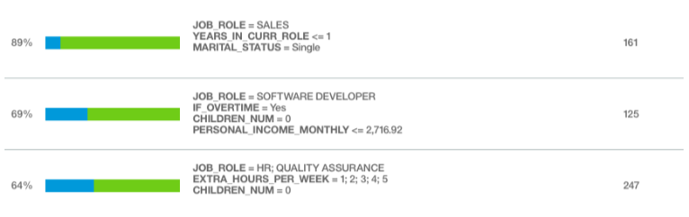

Finding the decisive factors in resigning to reduce the attrition rate
Dec 2017 ~ BSc Course "Introduction to Business Analytics"
Length: 2mo (at 0.25 FTE)
Software: Watson Analytics
Data: 12 000 instances representing the employees of a company, each having 43
attributes, ranging from personal life to details about his/her academic path
Problem description:
Gaining insights into what factors are associated with employee attrition, such that the
employer can address them preventively and avoid people quitting their job
Approach:
First, the data was cleansed by eliminating illogical entries (e.g. a
person could not be hired at an age lower than his/her actual age), as well as redundant
data points and variables. Afterward, IBM Watson performed the analysis and generated the
decision tree visualization.

Results:
The results showed that single people working in sales for less than a year are the most
likely to resign their job, with an 89% probability. They are followed by software developers who work
overtime, have no kids, and are paid less than 2 700 per month, who have a 69% probability of quitting.
